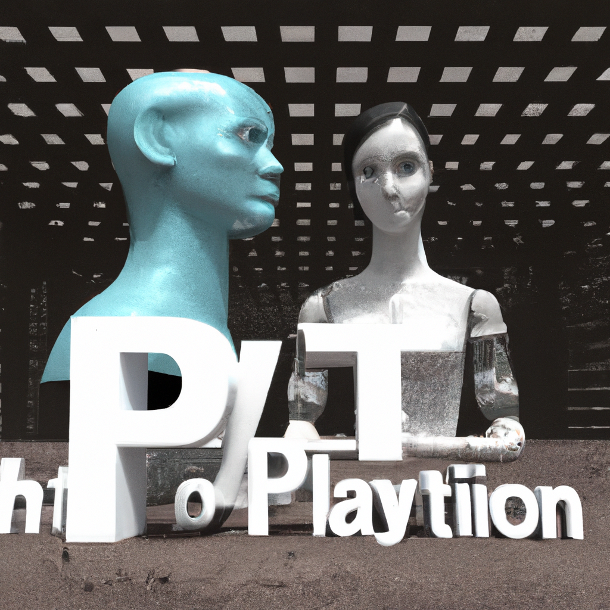

The future of Python and AI
Python has become a powerful language in the world of computer programming and coding. It has opened the doors to create powerful programs and applications that can help us in our everyday lives. With the rise of artificial intelligence, Python is being used more and more to create programs that can think and act on their own. AI has the potential to revolutionize the way we use technology and Python is at the forefront of this revolution.
AI can be used to create programs that are more efficient, accurate